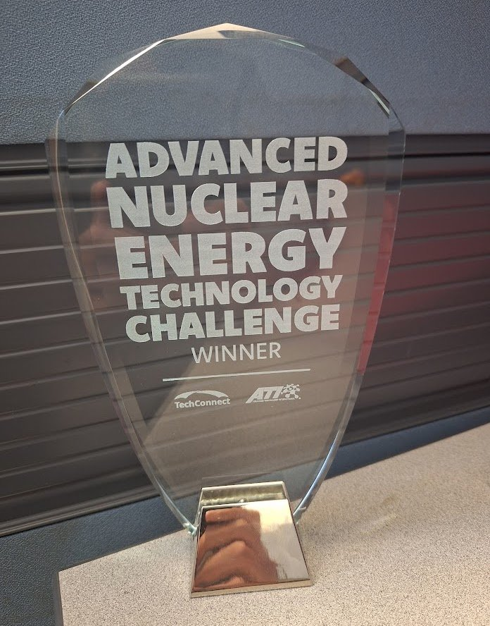

Enova Concepts wins Advanced Nuclear Energy Technology Challenge
FOR IMMEDIATE RELEASE
Enova Concepts Wins First Place in the Advanced Nuclear Energy Technology Challenge
San Antonio startup takes the $25,000 grand prize for UbiRAD technology concept, a printed-sensor system that replaces monthly radiation surveys with continuous, site-wide monitoring
SAN ANTONIO, Texas — September 30, 2026 — Enova Concepts has won first place and a $25,000 grand prize in the Advanced Nuclear Energy Technology Challenge, hosted by ATI (Advanced Technology International) and TechConnect. The company was selected following a live finalist pitch at the Defense TechConnect Innovation Summit in National Harbor, Maryland, held September 22–24.
Enova Concepts competed with UbiRAD: Ubiquitous Radiological Anomaly Detection, a radiation monitoring system built on printed, structurally integrated semiconductor sensors. The challenge sought technologies that make nuclear energy faster to deploy and easier to integrate into modern energy systems.
The Technology
The manufacturing capability behind UbiRAD comes from Enova Concepts' work on a 2024 NASA Small Business Technology Transfer (STTR) award, conducted with The University of Texas at San Antonio, to develop 3D printed electronics engineered to survive extreme environments. The same direct-to-surface and roll-to-roll printing approach that allows sensors to be applied to aerospace structures allows them to be applied across a reactor facility.
"Human operators and hundred-year-old instruments should not be our first line of defense against systems failure," said Sean Garnsey, Ph.D., Chief Technology Officer of Enova Concepts, who delivered the pitch. "What stayed with me from preparing this pitch was learning that Navy nuclear operators, reactor design engineers, and people building nuclear power for space all describe the same gap independently. That kind of agreement is rare, and it tells us we are solving a real problem."
What Comes Next
The company's development path runs through manufacturing scale-up, deployment in a university research reactor, deployment in a non-safety-critical role at a federally funded research and development center or development reactor, regulatory certification, and finally deployment in a small modular reactor.
Regulatory approval, not technical feasibility, is the principal barrier the company expects to face. Enova Concepts is seeking partnerships with reactor operators, national laboratories, and regulators to establish efficacy data early in the development cycle.
The underlying sensing platform has applications beyond commercial nuclear power, including space systems, chemical, biological, radiological and nuclear (CBRN) defense, and medical imaging.
About Enova Concepts
Enova Concepts is a veteran-owned materials design and manufacturing company based in San Antonio, Texas, specializing in additively manufactured electronics engineered for extreme environments. The company began operations in 2024 out of a NASA STTR project conducted in partnership with The University of Texas at San Antonio.
Its technical leadership includes Matt Trippy, Founder and CEO, a devices subject matter expert and U.S. Air Force veteran; Sean Garnsey, Ph.D., Chief Technology Officer and manufacturing subject matter expert; Amar S. Bhalla, Ph.D., materials subject matter expert and Los Alamos National Laboratory Distinguished Visiting Scientist; and Miltos Alamaniotis, Ph.D., subject matter expert in artificial intelligence for nuclear security.
Enova Concepts has been recognized with a UTSA Innovation Award by the State of Texas, selection and completion of the NSF I-Corps Fall 2024 National Cohort, and an "Awardable" designation on the DARPA ERIS marketplace.
Media Contact
Sean Garnsey, Ph.D.
Chief Technology Officer, Enova Concepts
info@enoconcepts.com